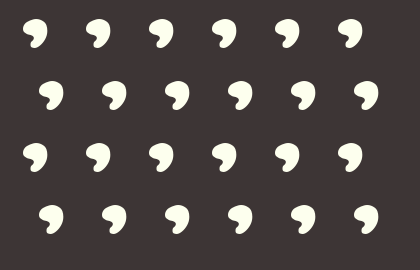
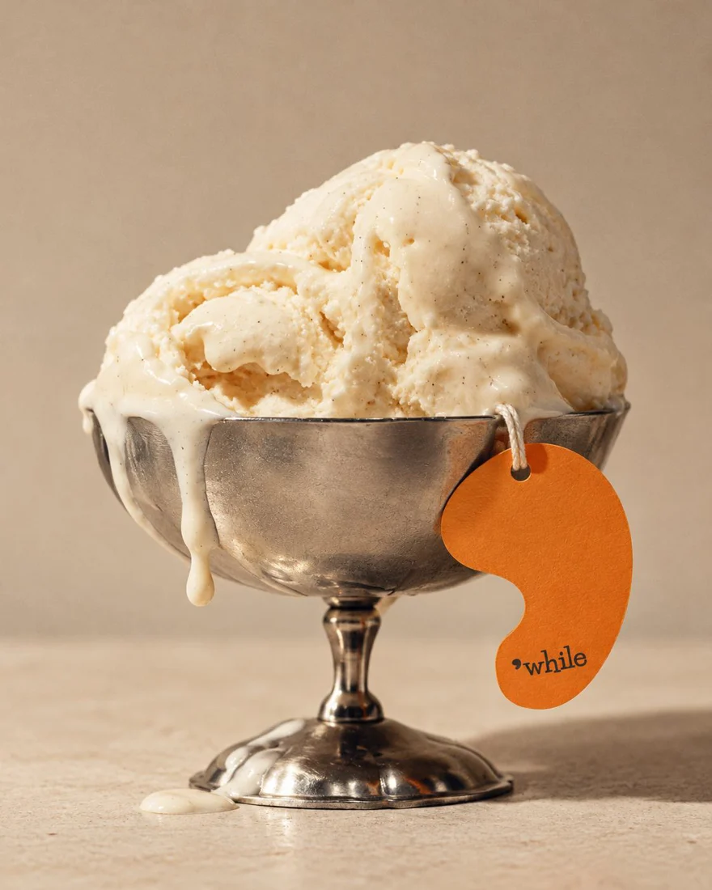
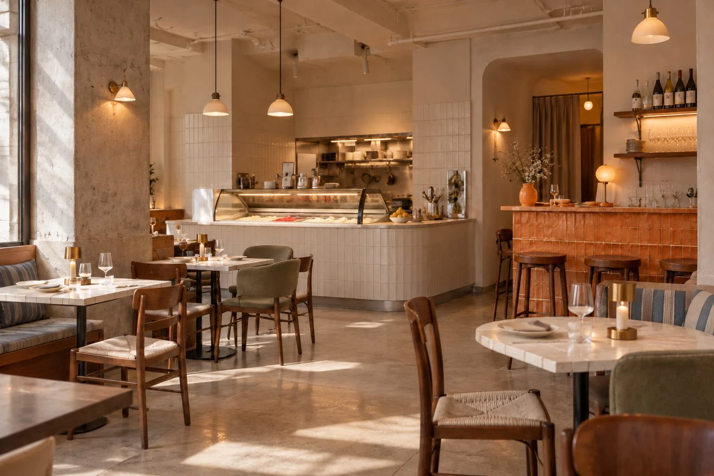

Statement + Image
One expressive headline and one calm photograph.
03 / Graphic Language
Supporting forms, spacious grids, and warm photography give the identity room to move. Keep each choice connected to the original artwork.

Unit height h; horizontal pitch 2.2h; vertical pitch 2.1h. Keep all units at one scale and orientation. Use on tissue, packaging interiors, and tray liners.
Three small courses, brought to your table one at a time.
Take Your Sweet Time.

One expressive headline and one calm photograph.
A full-width reading column with a supporting detail.
Equal containers with consistent title, description, and progress positions.
Use approximately 5% desktop side margins. Start with 24 px mobile side margins and 16 px gutters. Stack sections in content order and choose breakpoints by content fit. Keep the complete logo visible.

Show small servings, natural gestures, intimate tables, and tactile details.
Use believable textures, warm light, gentle shadows, and uncluttered compositions. Let the serving size and the space feel comfortable and real.